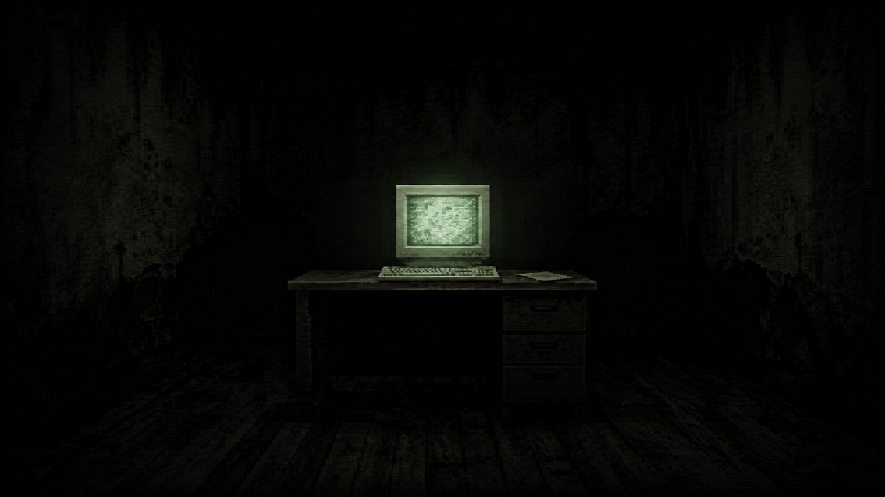
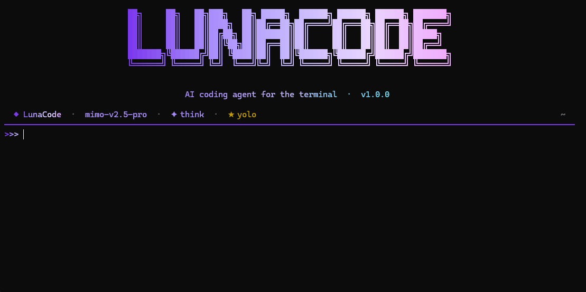
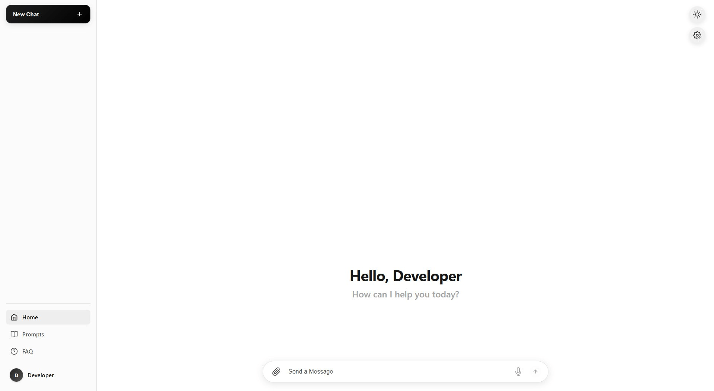

Released
Inside the Screen
3D-хоррор от первого лица о том, что происходит по ту сторону экрана. Атмосфера, звуки и тишина, в которой что-то всегда не так.
NeuDev — независимая студия разработки игр. Сейчас всё, что вы видите, — результат работы одного человека: @neuroffc.
Маленький состав — это не приговор, а свобода. Каждое решение, каждая строчка кода и каждый пиксель проходят через одни руки. Игры и проекты выходят такими, какими были задуманы, без компромиссов.
Помимо игр студия пробует другие направления. Что-то развивается, что-то закрывается — и это нормально. Опыт остаётся всегда.
Сейчас в каталоге 1 игра. Дальше — больше.

3D-хоррор от первого лица о том, что происходит по ту сторону экрана. Атмосфера, звуки и тишина, в которой что-то всегда не так.
Здесь появится следующий проект. Следите за обновлениями в Telegram.
Помимо игр мы пробуем себя в других направлениях.

AI-ассистент-кодер, живущий в терминале. Читает код, пишет код, запускает тесты, ищет по репозиторию — вызывает столько инструментов, сколько нужно для ответа.
lunacode

Десктопное приложение для работы с ИИ: безлимитные диалоги, кастомные правила, vibe-coding и аккуратный UX. Сейчас не поддерживается.
Все наши игры сделаны на Godot 4.6 — открытом, лёгком и дружелюбном движке. Он позволяет нам быстро прототипировать идеи и сохранять полный контроль над кодом.
Пишите по любым вопросам — сотрудничество, идеи, фидбек.
Inside the Screen — наш дебютный 3D-хоррор от первого лица. Игрок оказывается в маленькой комнате с компьютером, и по ту сторону монитора что-то начинает идти не так.
Игра построена на атмосфере и звуковом дизайне: глитчащие экраны, шёпоты, дыхание вентиляции, удалённые шаги и тишина, которая страшнее звуков. Минимум скримеров — максимум присутствия.
WASD — движение, E — взаимодействие, F — осмотреться, ESC — паузаНе «пугать», а поселить лёгкое неудобство: ты сидишь перед монитором, и вроде всё нормально, но что-то рядом дышит. Финал и разгадка — оставлены на игрока.
menu_bg.gdshader)MeshCache для оптимизации сценLunaCode — это AI-ассистент-кодер, который живёт прямо в вашем терминале. Попросите его прочитать код, написать код, запустить тесты, поискать по репозиторию или выполнить shell-команду — он вызывает столько инструментов, сколько нужно, прежде чем дать финальный ответ.
Запускается одной короткой командой
lunacode. Никаких отдельных окон,
браузеров или тяжёлых IDE — только ваш терминал
и агентский цикл «модель ↔ инструменты».
bash, read_file, write_file, edit_file, glob, grep/ и листайте стрелками/model, /theme и другиеCtrl+O — раскрыть обрезанный вывод инструментаESC — прервать агента прямо во время генерацииLUNACODE.md / AGENTS.md↑/↓) и сохранение сессий через /save / /load
LunaCode читает переменные окружения
(LUNACODE_API_URL, LUNACODE_API_KEY,
LUNACODE_MODEL, LUNACODE_THEME),
файл ~/.lunacode/config.json и встроенные дефолты —
именно в этом порядке.
.\setup.ps1.\setup.ps1 -Yeschmod +x setup.sh./setup.shlunacode
SigmaAI Desktop — десктопное приложение для работы с искусственным интеллектом. Главная задача — сделать общение с ИИ-моделями удобным, красивым и по-настоящему рабочим прямо у вас на компьютере.
Внутри был аккуратный UX, тёмная тема в тон студии, продуманные клавиатурные сокращения и всё, чтобы переписка с умной моделью не ощущалась как очередная вкладка в браузере.
Для тех, кто хотел нормальный, предсказуемый ИИ-клиент на десктопе: разработчики, авторы, исследователи, люди, которые думают вслух — и не хотят зависеть от вкладки в браузере.
SigmaAI был экспериментом, и как и любой эксперимент, он завершился. Часть идей перешла в другие проекты студии, часть осталась как полезный опыт. На месте SigmaAI теперь не пустое место — теперь у нас есть LunaCode, который во многом унаследовал философию SigmaAI, но живёт уже в терминале.
Если вы ищете похожий инструмент — посмотрите LunaCode.